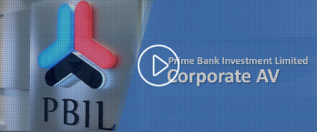
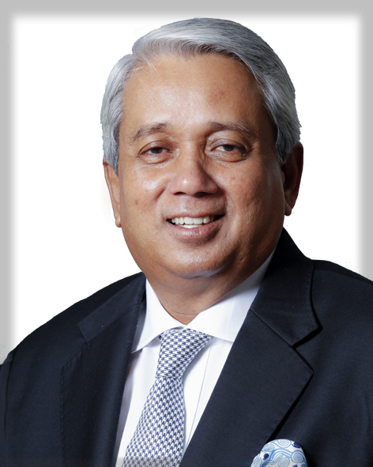
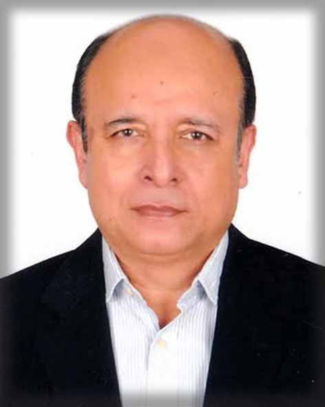
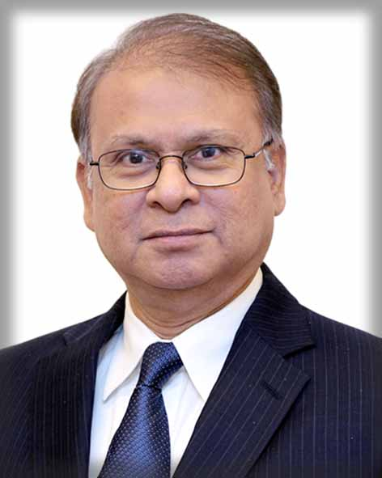
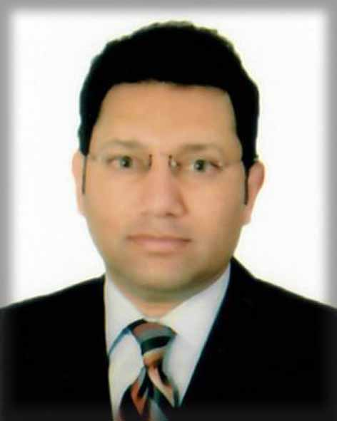
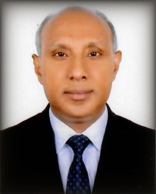
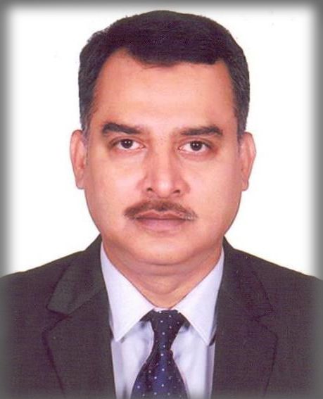

ABOUT OUR COMPANY

Prime Bank Investment Ltd (PBIL) a subsidiary of Prime Bank Ltd started its journey from April 28, 2010 vide certificate of incorporation no. C-84266/10. It is one of the leading investment banks of the country with a paid-up capital of BDT 3,000 million. The PBIL has been operating actively in the capital market since 2006 and its management has over one decade of experience. The Board of Directors consists of highly experienced scholars including economists and the people with entrepreneurial track records and business development.
The functions of investment banking were separated from Prime Bank Limited by forming a subsidiary company in terms of Bangladesh Bank’s BRPD circular no. 12 dated 14 October 2009. Bangladesh Securities and Exchange Commission (SEC) thereafter issued a full-fledged merchant banking license in favor of Prime Bank Investment Limited, vide letter no. SEC/Reg/MB/SUB/2010/03/208 dated 02 June 2010 with effect from 01 June 2010.
Being one of the largest investment banks in the country, the PBIL offers various services such as mergers and acquisitions related services, business valuation, syndication and structured finance, issue management, corporate advisory, trustee, underwriting and portfolio management services to its clients. Considering its strong clientele base, expertise of its management and support from the parent company, the PBIL has the competitive advantage in providing investment banking related services to its clients.
CORPORATE HISTORY
We have been operating in the Capital Market since 1996 as a division of Prime Bank Ltd.
We acquired full-fledged Merchant Banking License from the Bangladesh Securities and Exchange Commission (BSEC) in 2001
We acquired Depository Participant (DP) License in 2004 from Central Depository Bangladesh Ltd. (CDBL)
We started full fledged operation from 2006.
We launched professional Portfolio Management Service in 2007
We started branch operations to provide Portfolio Management Services in major locations of Dhaka City and Sylhet in 2008
We became a subsidiary of Prime Bank Ltd. in 2010 with a paid-up capital of Tk. 300 crore
We are the Sponsor and Director of Prime Bank Securities Ltd., a subsidiary of Prime Bank Ltd. having both DSE & CSE membership license.
The Prime Bank Investment Ltd. (PBIL) has entered into a Joint Collaboration with Beacon Mergers & Acquisitions, Toronto, Canada and as part of such initiation, the PBIL conducted a Two-Day workshop on “Mergers and Acquisitions: A possibility in Bangladesh” at the Utsav Hall, in Radisson Blu Water Garden Dhaka, on 8-9 September 2019.
BOARD OF DIRECTORS
MR. C. Q. K MUSTAQ AHMED
Chairman
Mr. CQK Mustaq Ahmed had a long career in the Bangladesh Civil Service starting from January 1981. He served in various positions in the government which include Senior Secretary, Ministry of Home Affairs; Senior Secretary, Ministry of Agriculture; Secretary, Bridges Division, and Secretary, Ministry of Liberation War Affairs. After his retirement from the civil service he was appointed as the Chairman of the newly established Financial Reporting Council (FRC), the independent government regulator for auditing, accounting and actuarial functions of designated ‘Public Interest Entities’ like banks and other financial institutions, public and private sector companies and corporations, businesses, industries, NGOs, etc. FRC is also principal regulator for relevant professionals like Chartered Accountants, Cost and Management Accountants, Actuaries, Valuers etc. As its founder Chairman he built FRC into a fully functional national regulatory body.
Mr. Mustaq Ahmed obtained B.A. Honours and M.A. degrees in Economics from the Dhaka University. He attended study courses and leadership development programs in Harvard University Kennedy School of Government, USA; Birmingham University, UK; Civil Service College Singapore; and International Academy for Leadership, Cologne, Germany.
In his Civil Service career Mr. Ahmed also worked, among various other positions, as DG NGO Affairs Bureau, First Secretary Bangladesh High Commission London, Deputy Commissioner Narayanganj, etc.
He also served on the Board of Directors of Bangladesh Krishi Bank, Bangladesh Karma Sangsthan Bank, and Social Development Foundation (SDF). Currently he is serving as Independent Director, Reckitt Benckiser BD Ltd., Independent Director, Prime Bank Ltd., and Director, Bangladesh NGO Foundation, Govt. of Bangladesh.
During his career he has travelled more than 45 countries of the world in different official capacities.

AZAM J CHOWDHURY
Director
Mr. Azam J Chowdhury is an elite industrialist and entrepreneur in Bangladesh. He is the Chairman and owner of East Coast Group, which manages a diversified portfolio of business valued in excess of USD of 4 billion. In addition, he is the Chairman of The Consolidated Tea & Lands Company Bangladesh Limited (formerly, James Finlay Limited), largest producer of Tea in the region. Mr. Chowdhury is also the Managing Director of MJL Bangladesh Limited, an affiliate partner of Exxon Mobil Corporation in Bangladesh and engaged in all segments of petroleum downstream sector.
Mr. Chowdhury is the Director of Omera Petroleum Ltd. one of the largest LPG operators of the country. He is also the Director of Omera Cylinders Ltd. & Omera Fuels Ltd., market leader in LPG business.
IMr. Chowdhury is the President of LPG Operators Association of Bangladesh (LOAB) and Bangladesh Energy Companies Association (BECA). He is the President of Bangladesh Ocean Going Ship Owner’s Association (BOGSOA). Mr. Chowdhury is also the President of Bangladesh Association of Publicly Listed Companies (BAPLC) and Director of Central Depository Bangladesh Limited (CDBL).
Mr. Chowdhury was the longest serving Chairman of the Board of Directors of Prime Bank Limited, a private sector leading commercial bank. At present, he is one of the Directors of prime Bank Investment Limited (PBIL). He also served as the Chairman of Green Delta Insurance Company Limited (2001-2005), one of the most successful general insurance companies in Bangladesh.
He has also been interviewed in TIME magazine edition December 16, 2019. He got the most prestigious award “Business Person of the Year 2018” jointly given by DHL and The Daily Star.
In recognition to his performance, the Hungarian Government nominated him as the Honorary Consul of Hungary in Bangladesh. Mr. Chowdhury completed his BA (Hons) and MA in English Literature from Dhaka University.
He is a renowned Golfer and achieved laurels several times in this sporting arena.

DR. G M KHURSHID ALAM
Director
Mr. G.M. Khurshid Alam has been an Independent Director of the Bank. Mr. Alam is also serving as a Director with Policy Research Institute (PRI), a leading policy and economic research think-tank of Bangladesh. Prior to that he served for 17 years with the World Bank as Senior Private Sector Development Specialist in its South Asia Private Sector and Finance (SASFP) Department, from where he retired in August 2012.

MR. SHAMSUDDIN AHMAD PHD
Director
Dr. Shamsuddin Ahmad has been appointed as the Shareholder Director of the Prime Bank Investment Limited. Dr. Ahmad was the Chairman of the Audit Committee in the Board of Prime Bank Limited and is a Director of the Prime Bank Securities Limited.
Dr. Ahmad is a distinguished development practitioner with 26 years of experience in the World Bank tackling development challenges in the financial sectors of several countries. Before retiring in February 2015, Dr. Ahmad was a Senior Financial Sector Specialist in the South Asia region of the World Bank. He has worked extensively with the Bangladesh Bank, the State Bank of Pakistan and the Nepal Rastra Bank in assisting these Central Banks to transform themselves into professional, efficient and modern institutions.
Dr. Ahmad completed his MBA with distinction from IBA in 1977, and started his career as a commercial banker before leaving for The East West Center in Honolulu, Hawaii, in January 1983, to pursue higher education. He obtained his Masters and Ph.D. degrees in Development Economics from the University of Hawaii, and returned home to join the World Bank Office in Dhaka in October 1989.He was later posted in the Islamabad, Kathmandu, and Washington DC offices of the World Bank. He has won several awards in his educational and professional pursuits, including the prestigious Makana Award for Leadership at the East West Center.
Dr. Ahmad has participated in several international conferences on various financial sector development issues. He also completed the Financial Institutions Program for Economic Development at the Kennedy School of Government in Harvard University in 2004.

MR. HASSAN O. RASHID
Director
Mr. Hassan O. Rashid representing Prime Bank Limited as the Nominated Director in the Board of Prime Bank Investment Limited. He is the Managing Director and Chief Executive Officer of Prime Bank Limited.
Prior to joining Prime Bank, Mr. Rashid was Additional Managing Director at Eastern Bank Limited. In his eight-year stint, he is lauded for his leadership role in achieving balance sheet growth and driving transformation journey of Eastern Bank.
Mr. Rashid brings in more than 27 years of experience in banking industry both in local and multinational banks in senior positions in Corporate, Risk Management, SME and Retail Banking. He started his career with Credit Agricole Indosuez and later moved to HSBC and Standard Chartered Bank (SCB) in different senior leadership positions.
Mr. Rashid is a Graduate of Capital University of USA in Economics and Business Administration and done his Master’s degree in International Management from Garvin School of Management, Thunderbird, USA. He is also certified "Credit Professional" of Omega, UK.
MANAGEMENT

MR. KHANDOKER RAIHAN ALI, FCA
SEVP & COO
Mr. Khandoker Raihan Ali, FCA is the COO and Senior Executive Vice President of the Prime Bank Investment Limited with an experience of more than 13 years in the merchant banking. Mr. Raihan is working with PBIL since its inception at 2010. He is also a fellow member of the Institute of Chartered Accountants of Bangladesh (ICAB). Before starting his journey with the Prime Bank Investment Ltd he worked for Prime Bank Ltd Merchant Banking and Investment Division (MBID). As per BRPD Circular of Bangladesh Bank, the MBID converted into a separate subsidiary company of the Prime Bank, namely, “Prime Bank Investment Ltd” in the year 2010. Prior to joining Prime Bank, Mr. Raihan worked in the Head of Fund Management and Issue Management department of Bay Leasing & Investment Limited.

MR. REZA MASUD AL HUDA
SVP, Head of Portfolio
Mr. Reza Masud Al Huda, is the Head of Portfolio and Senior Vice President of Prime Bank Investment Ltd. He is a graduate from Rajshahi University in Marketing and associated with PBIL since its beginning. In His long 22 years experienced career in Capital Market he worked for different securities and Merchant Banks. He served as the Head of PMD at “City Bank Capital Resource Limited” from 2011-2015, where he established the Portfolio management division. Mr. Reza joined PBIL again at 2015 as Head of Portfolio.